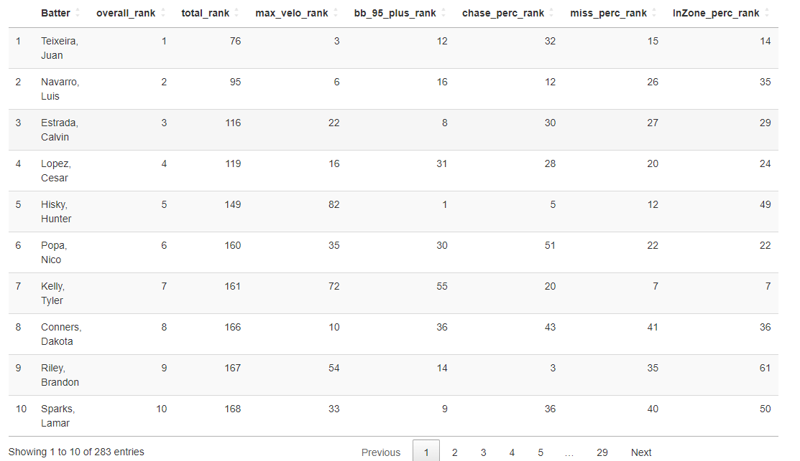

How I got here
Chances are you have heard or seen the movie Moneyball. You might have even read the book like I have. If you are a sports fan and have a passion for data then you would have enjoyed the movie and been amazed at the use of analytics and maybe even more amazed at the push back of it in the movie. For me, I know it is easy to wonder why the numbers can be useful unless I look at it through the analytical eyes it requires. Chances are you probably have not heard of the the Idaho Falls Chukars let alone the Pioneer Baseball League. This post is intended to be more of an introduction to my journey and beginnings with the League and exploration of the use of analytics I have been doing and will do for them.
Background
Before I get going it will be useful to have some context. The Chukars used to be a Minor League affilate with Kansas City Royals until the MLB restructured their minor leagues in 2020 leaving the Chukars and Pioneer League unaffialted and consequently, independent. This eventually opened the door for me, two years later, which I will get too. The Pioneer League now is an Offical Partner League to the MLB. Once the affilation with the Royals ended for the Chukars, a 20,000 dollar piece of equipment was just left in the stadium. That piece of equipment is known as Trackman, a black box that seats mounted to the press box directly above home plate. Covid resulted in no games played in 2020…quite the year for the Chukars and the League. Through reaching out to the Chukars I was able to operate Trackman during the 2022 season and that is where my story begins with the League.
A little more on the Chukars, they play at Melaleuca Field in Idaho Falls. If you are ever, a game is worth attending on a nice summer evening. Pro tip if you come, don’t park to close to the ballpark or else…

I was in my senior year at Brigham Young University - Idaho located in Rexburg just a 25 minute drive from the ballpark. I had heard about the Chukars but never attended one of their games. I actually never grew up playing baseball. One reason why I didn’t go to a game. It’s not that I don’t like to watch, I have been to a Washington Nationals game and Philadelphia Phillies game as I am from Virginia. Anyways, I had taken a couple math classes from a professor who I had developed a good relationship with. It was a fateful conversation we had one day in the hallway were I opened up to him about where I was and what I really wanted to do with my Major in Data Science. He had the crazy idea to contact the Chukars which took me a minute to remember they are the baseball team in Idaho Falls. We both followed up on it and got to talk to the assistant GM for them. Eventually that lead to me being the trackman operator for the Chukars during the 2022 season.
More about the data coming from Trackman. Trackman is actually in all the MLB ballparks and a main source of MLB teams data. The v3 version, I got the chance to operate, returns 167 different variables on batters, pitchers and catchers. Here is a snipbit of some of the variables:
Each row is a play in the game with the associated categorical and numerical information. As a trackman operator you are responsbile for making sure, before the game starts, that the roster is inputted properly. Then, as the game is happening, you are responsible for tagging each play with the appropriate categorical data so it is associated with its numerical data that trackman gets. This tagging process are from columns inning to notes.
League needs
With only five of the ten teams in the League having trackman in the stadium and operating it and attending most every game or them (those I didn’t my professor took over the trackman duties), I became curious how the league was using the data. Much of my focus has been on how the League can use the data rather than how the Chukars or an individual team can use it to be of benefit to them and provide a competitive edge. I came to understand firsthand the divide in baseball that is shown in Moneyball between those who accept advanced analytics and those who are more “old School” and trust there eyes to evaluate the play on the field. So this and the way I think, influenced my perspective on how to use the data to benefit the league and its players and umpires. After all, if they are a development league they need to be doing all they can to help the players progress and utilize what resources they have.
During one home stand early on in the season I had the privilege of talking with an MLB scout who eventually shared with me some key Trackman Metrics teams look at. While I throughly enjoyed that conversation I can’t remember to much of the detail and won’t get into it here as it is not extremely relavant.
As I thought about the league and the data and from conversations with my professor, I found out who the league executives I should email were and did so. This lead to a great meeting which subsequently lead to other meetings and being asked to the be the Chair of the Data Analytics working group or committee during the offseason.
My Analysis
While the Leauge has its needs for the data and I am working to provide some resources for them, I had my own projects I wanted to work with the data and the metrics I got from the scout.
To find out who the better Pitchers, Batters, and Catchers are around the league, I took the metrics the scout gave me and decide to create a ranking summation model to determine which ones were the best overall players for their respective positions. I know there are many SABRmetrics that can calculated and more advanced ways to doing something like this, but I needed something fast and something simple.
The following metrics and formula’s are:
Pitcher Metrics
\[ \text{Ground Ball%} = \frac{Ground Balls} {Pitches Hit In Play} \]
- A higher GB % is desired since it is expected to result in outs.
\[ \text{Fly Ball %} = \frac{Fly Balls} {Pitches Hit In Play} \]
- A lower FB % is desired as well
\[ \text{1st Pitch Strike %} = \frac{1st Called Strike}{Total 1st Pitches} \]
- A Higher 1 pitch strike % is desired and shows the control a pitcher has.
\[ \text{KZone %} = \frac{Total In Play OR Inside Strike Zone}{Total Pitches} \]
- This metric shows the overall control the pitchers has over his pitches and ability to hit the specific spot.
\[ \text{Chase Against %} = \frac{Strike Swinging}{Total Out of Zone} \]
- Chase against % is not a direct correlation to the movement of a pitch but does the deceptiveness in a pitchers pitch.
Along with:
- exit velo against
- vertical launch angle against
Which I decide to omit a formula since these are just averages.
Batter Metrics
- Average Vertical Launch Angle
- Max Exit Velo
- Percent of Batted Balls over 95 mph
- Percent of Batted Balls over 105 mph
This might seem redundant and I was told by a League Executive who had conversations with other MLB teams that this one was not something they really cared about and percent of Batted Balls over 95 mph was more important.
- Chase Average
Also know as whiff rate, is understood as the number of times a batter has strike swinging regardless of it the pitch was inside or outside of the zone.
- Miss percentage
- InZone Miss percentage
Catcher Metrics
- Pop Time MLB Definition - “represents the time elapsed from the moment the pitch hits the catcher’s mitt to the moment the intended fielder is projected to receive his throw at the center of the base.” (https://www.mlb.com/glossary/statcast/pop-time)
- Throw Speed Trackman Definition - “Speed at release of throw from catcher”
The scout did talk about catcher framing and its increase in popularity, but I have not had the time to think through how I want to calculate it or research how it is calculated (which will probably just be number of pitches outside zone called for strike within a certain range) and I know you can visualize it as well, I just haven’t taken the time to do so.
As I noted most of these metrics it is easy to see that by ordering the values for each player in descending order or ascending order you can then assign a rank to them. I combined most values and then ordered them to see who had the lowest score indicating that this player is the better overall pitcher in these metrics. the reason I said “most” is becuase some would have required more thought process to determine the best way to rank a player rather than descending and ascending. Those metrics for batters, Vertical Launch Angle and Batted Balls over 105 percent. For Vertical Launch Angle, if you are familiar with the SABRmetric of Barrel then you know launch angle has sweet spot. So to bin values and then give a rank based off of that is possible but I choose to leave off as I was going for something quick. For Batted Balls over 105 mph percent, as stated this one is not as important and many players did not have a hit that falls into this category. The results can be seen below:
Best Pitchers
A visual depicating the top Pitchers.

Here are eachs rankings for all metrics
Best Batters
A visual depicating the top Batters.
Rankings for each Metrics of the top ten Batters 
Best Catcher
A visual depicating the top Catchers. 
Rankings for each Metrics of the top ten Catchers
What is next?
With next season starting at the end of May and as the Chair of the Data Analytics committee I have been thinking about the best things to do that will benefit the league in the future. As I have gathered the information I can I know that the following projects are what will help benefit the league this upcoming season:
- A File Transfer Protocol (FTP) script to automate the gathering all the trackman data
- a web scrapping script to get Umpire information per game
- a web application to evaluate Umpire performance and I plan on starting a pitch classification model
- I know the former might be more complex, but I will see where I get.